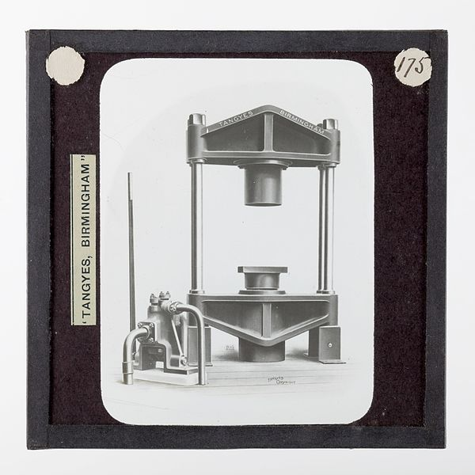

Plucking: Tea leaves and flushes, which includes a terminal bud and two young leaves, are picked from Camellia sinensis bushes typically twice a year during early spring and early summer or late spring. Autumn or winter pickings of tea flushes are much less common, though they occur when climate permits. Picking is done by hand when a higher quality tea is needed, or where labour costs are not prohibitive. Depending on the skill of the picker, hand-picking is performed by pulling the flush with a snap of the forearm, arm, or even the shoulders, with the picker grasping the tea shoot using the thumb and forefinger, with the middle finger sometimes used in combination. Tea flushes and leaves can also be picked by machine, though there will be more broken leaves and partial flushes reducing the quality of the tea. However, it has also been shown that machine plucking in correctly timed harvesting periods can produce good leaves for the production of high quality teas.
Withering / wilting: The tea leaves will begin to wilt soon after picking, with a gradual onset of enzymatic oxidation. Withering is used to remove excess water from the leaves and allows a very slight amount of oxidation. The leaves can be either put under the sun or left in a cool breezy room to pull moisture out from the leaves. The appropriate conditions for withering, such as temperature and relative humidity, are not readily defined in literature as it can vary depending on climate, producing region and type of process used. However, variations in the rate of withering, such as a hard or soft wither, has been shown to influence flavor compounds. The leaves sometimes lose more than a quarter of their weight in water during withering. The process is also important in promoting the breakdown of leaf proteins into free amino acids and increases the availability of freed caffeine, both of which change the taste of the tea.
Disruption: Known in the Western tea industry as disruption or leaf maceration, the teas are bruised or torn in order to promote and quicken oxidation. The leaves may be lightly bruised on their edges by shaking and tossing in a bamboo tray or tumbling in baskets. More extensive leaf disruption can be done by kneading, rolling, tearing, and crushing, usually by machinery. The bruising breaks down the structures inside and outside of the leaf cells and allows from the co-mingling of oxidative enzymes with various substrates, which allows for the beginning of oxidation. This also releases some of the leaf juices, which may aid in oxidation and change the taste profile of the tea.
Oxidation: For teas that require oxidation, the leaves are left on their own in a climate-controlled room where they turn progressively darker. This is accompanied by agitation in some cases. In this process the chlorophyll in the leaves is enzymatically broken down, and its tannins are released or transformed. The tea producer may choose when the oxidation should be stopped, which depends on the desired qualities in the final tea as well as the weather conditions (heat and humidity). For light oolong teas this may be anywhere from 5–40% oxidation, in darker oolong teas 60–70%, and in black teas 100% oxidation. Oxidation is highly important in the formation of many taste and aroma compounds, which give tea its liquor colour, strength, and briskness. Depending on the type of tea desired, under or over-oxidation can result in grassy flavours, or overly thick winey flavours. This process is sometimes referred to erroneously as fermentation in the tea industry.
Fixation / kill-green: Kill-green or shāqīng (殺青) is done to stop the tea leaf oxidation at a desired level. This process is accomplished by moderately heating tea leaves, thus deactivating their oxidative enzymes and removing unwanted scents in the leaves, without damaging the flavour of the tea. Traditionally, the tea leaves are panned in a wok or steamed, but with advancements in technology, kill-green is sometimes done by baking or panning in a rolling drum. In some white teas and some black teas such as CTC blacks, kill-green is done simultaneously with drying.
Sweltering / yellowing: Unique to yellow teas, warm and damp tea leaves from after kill-green are allowed to be lightly heated in a closed container, which causes the previously green leaves to turn yellow. The resulting leaves produce a beverage that has a distinctive yellowish-green hue due to transformations of the leaf chlorophyll. Through being sweltered for 6–8 hours at close to human body temperatures, the amino acids and polyphenols in the processed tea leaves undergo chemical changes to give this tea its distinct briskness and mellow taste.
Rolling / shaping: The damp tea leaves are then rolled to be formed into wrinkled strips, by hand or using a rolling machine which causes the tea to wrap around itself. This rolling action also causes some of the sap, essential oils, and juices inside the leaves to ooze out, which further enhances the taste of the tea. The strips of tea can then be formed into other shapes, such as being rolled into spirals, kneaded and rolled into pellets, or tied into balls, cones and other elaborate shapes. In many types of oolong, the rolled strips of tea leaf are then rolled into spheres or half spheres and this is typically done by placing the damp leaves in large cloth bags, which are then kneaded by hand or machine in a specific manner. The tea can also be pressed into bricks through the use of heavy stones or presses.

Glass lantern slide, circa 1910, showing a Tangye hydraulic tea press of the type supplied to Cheerkoff, Panoff & Co. of Hankow, China for pressing dried tea leaves into flat 2+1⁄2-pound cakes for shipping to Asiatic Russia.
Drying: Drying is done to finish the tea for sale. This can be done in a myriad of ways including panning, sunning, air drying, or baking. Baking is usually the most common. Great care must be taken to not over-cook the leaves. The drying of the produced tea is responsible for many new flavour compounds particularly important in green teas.
Aging / curing: While not always required, some teas require additional aging, fermentation, or baking to reach their drinking potential. For instance, a green tea puerh, prior to curing into a post-fermented tea, is often bitter and harsh in taste, but becomes sweet and mellow through fermentation by age or dampness. Additionally, oolong can benefit from aging if fired over charcoal. Flavoured teas are manufactured in this stage by spraying the tea with aromas and flavours or by storing them with their flavorants.
Sorting: Tea sorting can help remove physical impurities, such as stems and seeds. Using sorting equipment to improve tea production efficiency is very common in tea processing plants, especially in black tea processing. A Color sorter may also be used to classify final product grades according to color and shape.
Classification
Green tea
This tea has undergone the least amount of oxidation. The oxidation process is halted by the quick application of heat after tea picking, either with steam, the method preferred in Japan, or by dry roasting and cooking in hot pans, preferred in Chinese tea processing. Tea leaves may be left to dry as separate leaves or they may be rolled into small pellets to make gunpowder tea. This process is time-consuming and is typically done with pekoes of higher quality. The tea is processed within one to two days of harvesting, and if done correctly retains most of the chemical composition of the fresh leaves from which it was produced. Variation in steaming time for fixation or processing from additional stages of rolling and drying are sometimes used to improve or alter the flavor for types of green tea. Green tea leaves undergo fixation by either roasting (panning) or steaming. Generally, roasted varieties are richer in flavor, while steamed varieties are more vivid in color.
Yellow tea
This tea is processed in a similar manner to green tea, but instead of immediate drying after fixation, it is stacked, covered, and gently heated in a humid environment. This initiates oxidation in the chlorophyll of the leaves through non-enzymatic and non-microbial means, which results in a yellowish or greenish-yellow colour.
White tea
Young leaves or new growth buds that have undergone limited oxidation through a slight amount of withering while naturally sun dried or specifically withered and then halting the oxidative processes by baking with the optimal withering conditions at 30 degrees Celsius (65% relative humidity) for 26 hours. Withering of the leaves can last from around one to three days depending on the season and temperature of the processing environment. The buds may be shielded from sunlight to prevent the formation of chlorophyll. The tea leaves meant for white teas are not kneaded nor undergo fixation, which preserves much of the white hair on the leaves and gives the tea a relatively mild flavour. White tea is produced in lesser quantities than most other styles, and can be correspondingly more expensive than tea from the same plant processed by other methods. It is less well known in countries outside of China, though this is changing with increased western interest in the tea. There is an international disagreement on the definition of white tea between China and other producing countries, where in China the term is applied primarily to tea varieties made through the white tea process while in other countries the term is used generally for teas made through the process.
Oolong tea
This tea's oxidation is stopped somewhere between the standards for green tea and black tea. The processing typically takes two to three days from withering to drying with a relatively short oxidation period of several hours. In this regard, most Darjeeling teas with light oxidation levels are more similar to green or oolong teas. In Chinese, semi-oxidized teas are collectively grouped as blue tea (青茶, literally: blue-green tea; also, celadon tea, for the pottery), while the term oolong is used specifically as a name for certain semi-oxidized teas. Common wisdom about lightly oxidized teas in Taiwan (a large producer of Oolong) is that too little oxidation upsets the stomach of some consumers. Even so, some producers attempt to minimize oxidation in order to produce a specific taste or allow the tea leaves to be easily rolled into the spherical or half-sphere form demanded by buyers in the market.
Black tea
The tea leaves are allowed to completely oxidize. Black tea is first withered to induce protein breakdown and reduce water content (68–77% of original). The leaves then undergo a process known in the industry as disruption or leaf maceration, which through bruising or cutting disrupts leaf cell structures, releasing the leaf juices and enzymes that activate oxidation. The oxidation process takes between 45 and 90 minutes to 3 hours and is done at high humidity between 20 and 30 °C, transforming much of the catechins of the leaves into complex tannin. Orthodox processed black teas are further graded according to the post-production leaf quality by the Orange Pekoe system, while crush, tear, curl (CTC) teas use a different grading system. Orthodox tea leaves are heavily rolled either by hand or mechanically on a cylindrical rolling table or a rotor vane. The rolling table consists of a ridged table-top moving in an eccentric manner to a large hopper of tea leaves, of which the leaves are pressed down onto the table-top. The process produces a mixture of whole and broken leaves, and particles which are then sorted, oxidized, and dried. The rotovate consists of an auger pushing withered tea leaves through a vane cylinder which crushes and evenly cuts the leaves. Crush, tear, curl is a production method developed by William McKercher in 1930 which uses machines with contra-rotating rotors with surfaces patterning that cut and tear the leaves producing a product popular for use in tea bags. The rotovate is often used to pre-cut the withered tea prior to the CTC and to create broken orthodox processed black tea.
Post-fermented tea
Teas that are allowed to undergo a second oxidation after the fixation of the tea leaves, such as Pu-erh, Liu'an, and Liubao, are collectively referred to as secondary or post-fermentation teas in English. In Chinese they are categorized as Dark tea or black tea. This is not to be confused with the English term Black tea, known in Chinese as red tea. Pu-erh, also known as Póu léi (Polee) in Cantonese is the most common type of post-fermentation tea in the market.
.jpg){kind=link}
{kind=link}